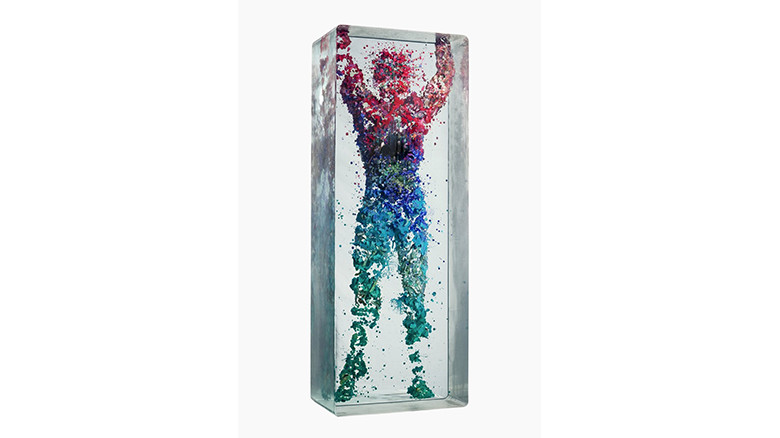

idea

Dustin Yellin
http://news.rabbitalk.com/archives/1020256737.html-どんな人
ガラスに絵の具を塗りながら何層も重ねて彫刻作品を制作しているアーティストです。通常の彫刻と違い削らずに重ねて作るので、最終的にガラスの直方体に彫刻が閉じ込められる形になります。
-解説
通常の彫刻と違い、周りはガラスになっています。そのため、分裂したり、飛び散ったりした表現を実物の立体で作ることができます。これを活かして、粒子が集まって人の形をつくるという表現に落とし込んでいます。また、色もグラデーションをつけることで粒子の動きがより鮮明はっきりさせています。ガラスを重ねることによって得られる利点を最大限活用した彫刻作品といえます。
-好きなところ
この作品の場合立体でみせているのでちょっとずれますが、一枚の絵に見える形が、実は別々のレイヤーで別々に動くという表現は映像等でよくあると思うので、このアーティストの動きの表現の出し方とかは参考になると思います。